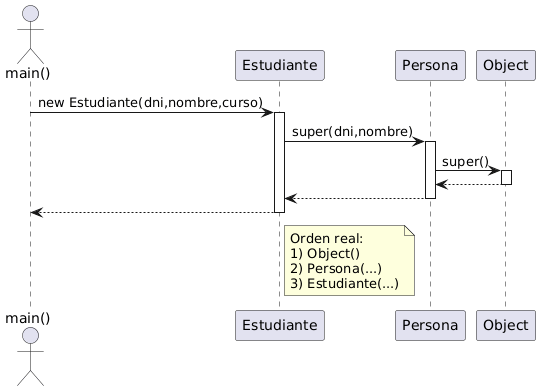

La herencia sirve para modelar una relación is-a (es-un), reutilizar lógica común y permitir polimorfismo (mismo tipo base, comportamientos distintos). Si la usas solo para “compartir código”, suele ser mejor composición.


En Java se expresa con extends:
public class SubClase extends SuperClase {
// ...
}public class Estudiante extends Persona {
// ...
}
Java permite heredar de una única clase. Para “múltiples capacidades”, se usan interfaces.
Si no se indica extends, la clase hereda de Object. Métodos clave: toString(), equals(), hashCode().
| Elemento | ¿Se hereda? | Idea práctica |
|---|---|---|
| Miembros public | ✅ | Accesibles siempre. |
| Miembros protected | ✅ | Accesibles en subclases. |
| Acceso por defecto | ✅/⚠️ | Solo mismo paquete. |
| Miembros private | ✅/❌ | Existen, pero no son accesibles directamente. |
| Constructores | ❌ | No se heredan; se encadenan con super(...). |
| Miembros static | ⚠️ | No hay polimorfismo: se ocultan. |
La sobreescritura (override) redefine el comportamiento en la subclase. Usa @Override para que el compilador te proteja.
@Override
public String toString() {
return super.toString() + " | extra";
}
Si un método está sobreescrito, al invocarlo se ejecuta el del objeto real (polimorfismo dinámico).
Un constructor de subclase llama primero al constructor de la superclase: super(...) va en la primera línea.
public class Hija extends Padre {
public Hija(int x) {
super(x); // primero
// luego lo propio
}
}Persona p = new Estudiante(); // upcasting implícito
// p.metodo() ejecuta el método real del objeto Estudiante si está sobreescritoDowncasting seguro:
if (p instanceof Estudiante) {
Estudiante e = (Estudiante) p;
}public abstract class Empleado {
public abstract double calcularNomina();
}- abstract: no se instancia.
- final en clase: no se puede extender.
- final en método: no se puede sobreescribir.
Fallos típicos: aparecen una y otra vez y tienen solución clara.
Error 1: Confundir override con overload
class Padre {
public void imprimir(int x) { }
}
class Hija extends Padre {
// NO sobreescribe: firma distinta => overload
public void imprimir(String x) { }
}
Pista: usa @Override. Si no compila, no estabas sobreescribiendo.
Error 2: Downcasting sin comprobar instanceof
Persona p = new Persona();
// Rompe en runtime: ClassCastException
Estudiante e = (Estudiante) p;
Solución:
if (p instanceof Estudiante) { ... }
Error 3: No hay super() sin parámetros
class Padre {
public Padre(int x) { }
}
class Hija extends Padre {
// ERROR: no existe super() vacío
public Hija() { }
}
Solución: llama a super(…) en la primera línea o define un constructor vacío en la superclase.
Error 4: equals() sin hashCode()
@Override
public boolean equals(Object o) {
if (this == o) return true;
if (!(o instanceof Empleado)) return false;
Empleado e = (Empleado) o;
return this.id.equals(e.id);
}
@Override
public int hashCode() {
return id.hashCode();
}Error 5: static no es polimórfico
class A { static void m(){ System.out.println("A"); } }
class B extends A { static void m(){ System.out.println("B"); } }
A ref = new B();
ref.m(); // imprime "A"
No. Se encadenan con super(...).
Para métodos de instancia sobreescritos: el tipo real del objeto.
Para static: el tipo de la referencia.
Cuando forma parte del contrato de herencia. Si es para saltarse encapsulación, revisa el diseño.
- is-a vs has-a.
- extends + herencia simple en Java.
- super(...) primera línea; si no hay super() → error.
- override: misma firma + @Override.
- polimorfismo: método ejecutado depende del objeto real.
- casting: downcasting solo con instanceof.
- abstract no se instancia; obliga a implementar.
- final: no heredar / no sobreescribir.
- equals ↔ hashCode coherentes.
Enlaces oficiales recomendados
Nota: enlaces a Java SE 21. Si usas otra versión, cambia “21” por la tuya.